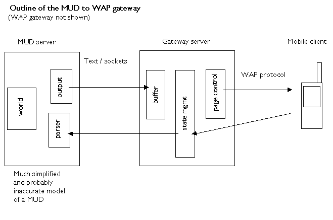

Richard Dallaway
2000-06-14
Text-based adventure games (MUDs, MOOs) are characterised by real-time social interactions between players. This document describes an architecture for accessing MUDs via WAP-enabled mobile devices.
There are a wide variety of MUDs running on different platforms with a different themes and conventions. The common element is that they are based on asynchronous free text flow over sockets: there is no higher-level protocol, such as HTTP, involved.
Players send commands as free text back to the server. The servers parse the free text commands and interpret the message as actions.
A MUD to WML gateway would have to:
Convert the text from the MUD to a WML representation suitable for the the mobile device. In particular this will mean buffering the asynchronous data from the server and cutting the received text into suitable sized decks.
Maintain state between the mobile client and the MUD server. That is, the gateway will be providing services to multiple users playing on different MUDs, and therefore has to know how to direct text flow between the appropriate parties. This is a function of the gateway because WAP, like HTTP, is a state-less protocol.
Add usability elements by hot-linking common MUD commands or provide commands on a options soft-key: exit, south, north, east, west, up, down, flee, save, status, inventory.
The proposed configuration is shown in figure 1.

Text send from the server is asynchronous. However, the WML content sent to the mobile client has to be a complete XML document before it is rendered: there cannot be an ongoing dialogue to the client (not until someone invents "waplets"). The buffer will receive and store anything sent from the server on behalf of the mobile client. The page control element will decide what should be sent to the client and when.
The page control has four functions:
Ensuring content is small enough to send to the mobile client. This means cutting content into multiple pages when necessary.
Making any required WML entity mappings (e.g., & translated to & and so on) and adding appropriate WML tags.
Adding navigation or MUD specific commands into the WML deck.
Controlling when enough information has been received to send to the client.
Point four deals with the asynchronous aspect of the MUD communication. The problem is this: when do you decide that there is an appropriate break in the output from the MUD server? This is no prompt or protocol headers to say "and now it's the client's turn to send something".
The following is proposed:
All content send from the server is stored in the buffer.
If there is a 500 ms pause in the sending of the content after a new line character, then the content is sent to the client.
If there is a total of a two second pause in the content sent to the buffer, and there is also content in the buffer, then the content is sent to the client.
If there is no content in the buffer, and there is a five second pause, the client may be sent the text "waiting for server to respond".
Nothing else can be sent to the client until the client makes a request: either sending a command, which may just be a blank command ("hitting return" or requesting "get more"). If the client requests more content and there is nothing in the buffer (cf. point 4) then the client will see the "waiting for server to respond" message.
At this time it is not possible to rely on HTTP-style cookies to work with all WAP gateways. As a result the MUD to WAP gateway will have to maintain a unique session variable for each client. This will be an integer sent with every request from the client as a "hidden value" in a form. The gateway will be responsible for including this value for each page it sends to the mobile client.
Two links:
(a) popular MUDs (go to screen 2)
(b) custom MUD (go to screen 3)
A list of links showing popular MUD names. Note that this list can be evolved based on the paramters users enter via the custom MUD option.
The links will take the user to screen 4.
This is a form allow the user to enter hostname or IP address of a MUD server and the port.
Submitting the form will take the user to screen 4.
This page shows the user the choice of mud they are about to enter. It allows the user to bookmark the selection.
Following an ENTER link will take the user to screen 5.
Response from the server are shown on this page. At the end of the page there is a form allowing the user to send back commands to the MUD server.
Popular commands will be shown on the options soft key. These will be:
exits, inventory, north, east, south, west, up, down, flee, who, save, quit.
An on-going project could be to try to parse the MUD server output to insert context sensitive commands such as: kill troll, swing sword, exam corpse, say to jono, read sign.
The user should be encouraged to respond quickly because there MUD to WAP gateway may be buffering important MUD events (such as "the sprit hits you with sword" and so on).